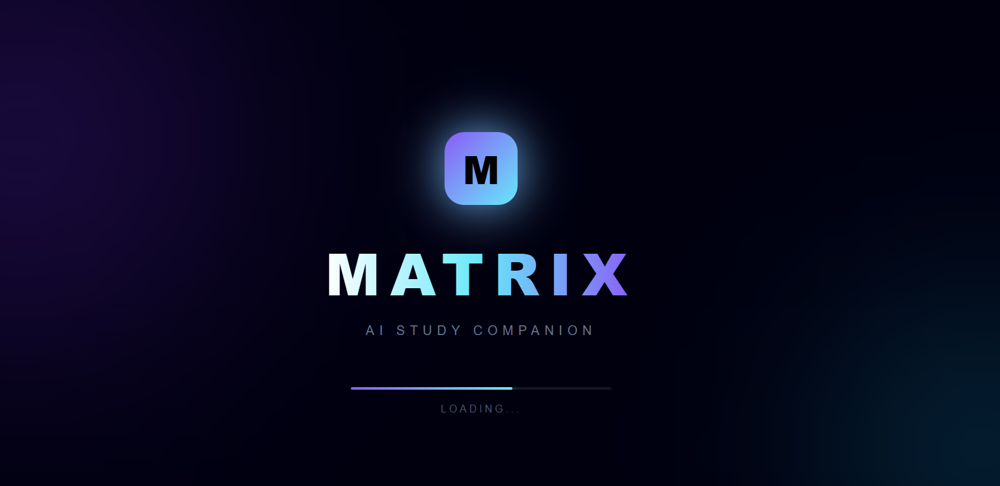
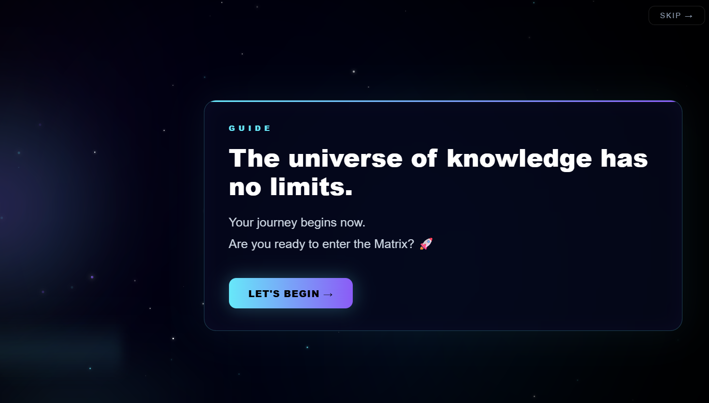
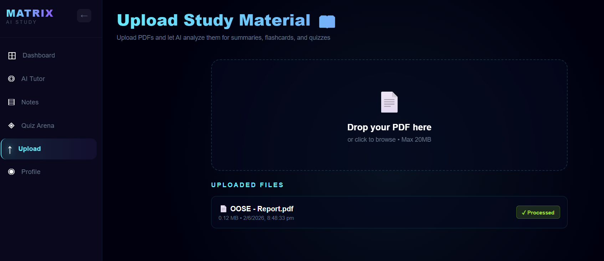
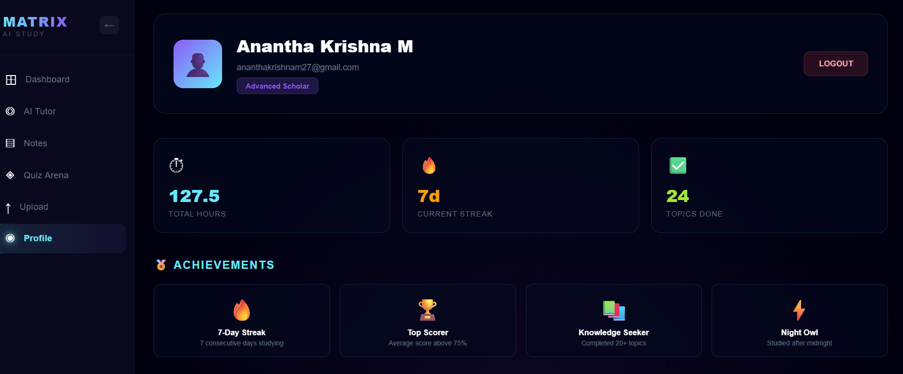

Featured engineering case study
Matrix AI Study App
An AI-powered learning companion that extracts syllabus topics from uploaded study materials to generate structured study roadmaps, interactive flashcards, conceptual mind maps, and knowledge-check quizzes.
Problem & Motivation
College and university students face extensive reading materials across dense textbook chapters, slide decks, and lecture notes. Traditional passive reading leads to poor retention, while manually crafting flashcards, concept summaries, and quiz tests consumes hours of valuable study time.
Matrix AI was designed to convert passive documents into active, engaging learning workflows. By combining document parsing with generative AI models and retrieval pipelines, students can immediately test their comprehension and identify knowledge gaps.
Architecture & Implementation
The platform is designed around an asynchronous pipeline optimized for document ingestion and AI generation:
- Frontend Workspace: Built with React, Tailwind CSS, and Framer Motion for fluid transitions. It offers clean, distraction-free study modes for flip cards, interactive quiz reviews with immediate explanations, and hierarchical visual mind maps.
- FastAPI Microservices: Leveraged Python and FastAPI for high-performance non-blocking endpoints, handling file uploads, text chunking, and generative prompt orchestrations.
- Gemini API & Prompt Engineering: Integrated Google Gemini API to parse complex academic subjects and generate strictly structured JSON responses containing questions, distractors, explanations, and key conceptual terms.
- Data & Vector Store: Backed by Supabase and PostgreSQL to store user profiles, study deck histories, and generated review sessions with real-time sync.
Key Features
- Document Processing: Fast parsing of uploaded lecture notes and course reference materials.
- Active Recall Flashcards: Interactive cards featuring key definitions, formulas, and concept explanations.
- Adaptive Quizzes: Automatically generated multiple-choice and short-answer questions with detailed feedback on mistakes.
- Conceptual Mind Maps: Visual graph breakdowns of related concepts to reinforce holistic subject understanding.
- Study History & Progress: Persistent decks stored for seamless revision before exams.
Technology Stack
React · Tailwind CSS · Framer Motion · FastAPI · Python · Gemini API · RAG · Supabase · PostgreSQL
Project Gallery





